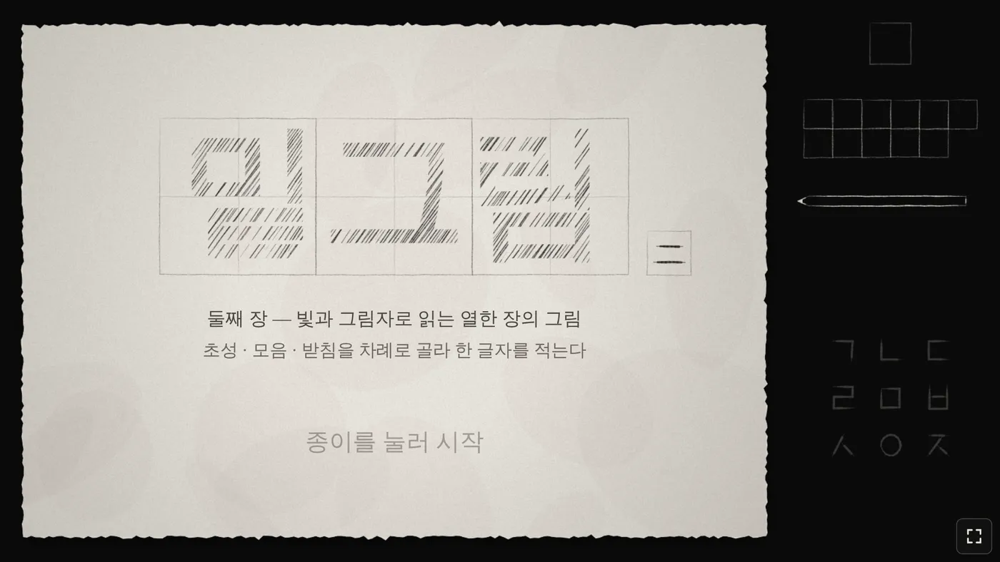
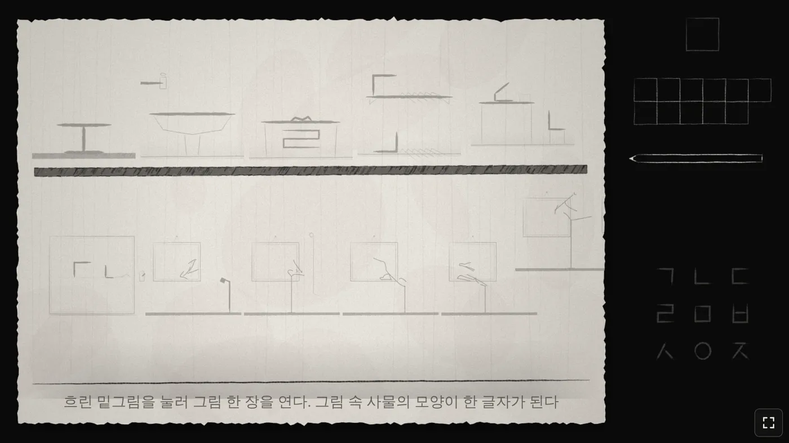

🧩 퍼즐 게임 · 무료 · 설치 없음
밑그림 둘째 장
“투사지에 비친 열다섯 장의 그림”
- 전체 1시간 이상
- 그림 퍼즐 15장
- 가로 화면
- 자동 저장
회원가입 없이 누르면 바로 시작돼요
어떤 게임인가요?
연필로 그린 방이 다시 열렸어요. 이번에는 책상 위에 반투명한 투사지 한 장이 놓여 있어요.
그림 속 사물은 글자의 첫소리와 받침이 되고, 투사지에 베낀 먹선은 가운데 모음이 돼요. 투사지를 그림의 접힌 자국에 딱 맞춰 겹쳐야 비로소 한 글자가 완성돼요.
한 장에서 베낀 먹선이 다음 장의 열쇠가 되고, 열네 장의 글자가 모이면 마지막 벽에 한 문장이 떠올라요. 1편을 하지 않았어도 바로 시작할 수 있어요.
이렇게 해요
- STEP 1
사물을 살펴요
방 안의 물건을 누르면 그 그림으로 들어가요. 움직이고, 당기고, 전등을 켜고 꺼 보며 글자가 될 모양을 찾아요.
- STEP 2
먹선을 베껴요
그림 속 먹선을 투사지에 베끼고, 투사지를 접힌 자국에 맞춰 겹쳐요. 돌아간 자국이면 투사지도 따라 돌아요.
- STEP 3
글자를 적어요
오른쪽 음절판에 첫소리 → 모음 → 받침 순서로 적어요. 맞히면 빨간 도장이 찍히고 나무에 잎이 돋아요.

🌿 알아 두면 좋아요
- 틀리면 잎이 하나 떨어지고, 세 번 틀리면 종이가 번져서 잠시 기다려야 해요.
- 오른쪽 위 모래시계는 그림 안에서만 흘러요. 모래가 다 내려오면 힌트가 하나씩 열려요. 한 장에 힌트는 세 개예요.
- 낮과 밤에 보이는 것이 달라요. 막히면 방의 전등을 꺼 보세요.
- 다시 처음부터 하고 싶으면 첫 화면이나 방 화면 오른쪽 아래의 「처음부터 새로」를 두 번 눌러요.
이런 분께 추천해요
- 「밑그림」을 끝내고 더 어려운 퍼즐을 기다린 분
- 방탈출·암호 풀기를 좋아하는 분
- 한글이 모이고 겹쳐 글자가 되는 순간을 좋아하는 분
설명이 거의 없는 게임이라 막히는 게 당연해요. 모래시계 힌트를 기다리고, 투사지를 이리저리 돌려 보세요. 1편보다 어렵다면 「밑그림」부터 해 보는 것도 좋아요.
📱 어떤 기기에서 하면 좋을까요?
- 가장 좋아요컴퓨터·노트북 크롬·엣지·웨일
투사지를 마우스로 섬세하게 맞출 수 있어요. 오른쪽 아래 전체 화면 버튼을 누르면 꽉 차요.
- 좋아요태블릿 아이패드·갤럭시탭
손가락으로 투사지를 끌고 돌리는 재미가 있어요. 가로로 눕혀 주세요.
- 괜찮아요휴대폰 가로로 돌려서
가로 화면에서만 그려져요. 가는 먹선을 맞춰야 해서 화면이 작으면 조금 힘들 수 있어요.
오른쪽 위 메뉴(⋮ 또는 ···)에서 「다른 브라우저로 열기」를 눌러 크롬이나 사파리로 열어 주세요. 앱 안에서는 전체 화면이 안 되고 저장이 풀릴 수 있어요.
🍎 아이폰·아이패드에서는
- ① 사파리로 열고 가로로 돌리기
세로로 들면 기기를 옆으로 돌려 달라는 안내가 떠요. 화면이 안 돌아가면 제어 센터에서 화면 회전 잠금을 꺼 주세요.
- ② 홈 화면에 추가하기
아이폰은 전체 화면 버튼이 동작하지 않아요. 공유 버튼(□↑) → 「홈 화면에 추가」로 열면 주소창 없이 꽉 찬 화면이 돼요.
- ③ 소리
연필 긁는 소리와 종이 소리가 분위기를 살려 줘요. 무음 스위치가 켜져 있으면 들리지 않지만, 소리가 없어도 풀 수는 있어요.
- ④ 이어서 하려면
진행은 그 기기에 자동으로 저장돼요. 아이폰 사파리는 오래 들어가지 않은 사이트의 기록을 지우기도 하니, 너무 오래 쉬지 말고 이어서 풀어 주세요.
🤖 갤럭시 등 안드로이드에서는
크롬이나 삼성 인터넷으로 열면 첫 터치 때 전체 화면과 가로 고정이 자동으로 켜져요. 안 되면 오른쪽 아래 전체 화면 버튼을 눌러 주세요.
▶ 바로 해 보기
설치도, 회원가입도 필요 없어요.
밑그림 2 시작하기game.edoori.co.kr/mitgeurim2/